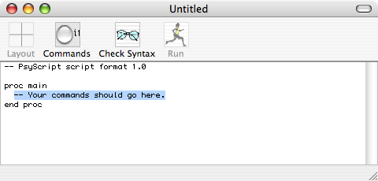
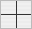
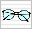
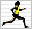

Contents
introduction
user interface
legal notices
Commands
Stimulus
images
sounds
movies
text
background
digital I/O
Response
keys & clicks
pausing
if
slider
text field
timers
logging
digital I/O
Other
procedures
repeating
tables
variables
aborting
Notes
stimulus files
randomness
conditions
|
Notes: user interface
From the point of view of the user (not an experimental subject, but someone writing a script), PsyScript is just a text editor with a few extra features. The main window looks like this:

It's the same as a TextEdit window, just with four extra icons at the top. Two of the icons are disabled (dim) because the file isn't saved yet. All the normal editing functions work: you can use New, Save, Save As..., and the find and replace functions as you'd expect to in any text editor.
The four icons function as follows:
|  |
Brings up a window allowing you to arrange image cells on the display. You can move the cells around and drop file icons into them to make them display images. When you have an arrangement that suits you, you can press a button and the application will automatically generate the commands that would be needed to achieve that arrangement. It doesn't do anything you can't do by typing commands yourself, but it's sometimes faster or more convenient.
|
|
Brings up a window showing all script commands. If you've forgotten the syntax of a command you can use it to check what commands exist and look at an example of each command. Click in the little circle next to a command and the application will insert that command into your script. If multiple lines are associated with a command (e.g. the if and repeat commands) then all associated lines are inserted.
|
|  |
Checks the syntax of the script, spotting misspelled commands and incorrectly used structures. Reformats the script, improving spacing and indentation to make the script's structure clearer. Identifies problems like two procedures having the same name, references to tables that don't exist, etc.. Does not spot all possible faults. Does not inspect references to stimulus files to make sure that the files exist. |
|  |
Checks the syntax of the script as described above then, if no errors are found, runs the script. |
For a more detailed introduction to the user interface and to the functioning of the above buttons, do the tutorials included with PsyScript (a good idea in any case).
|